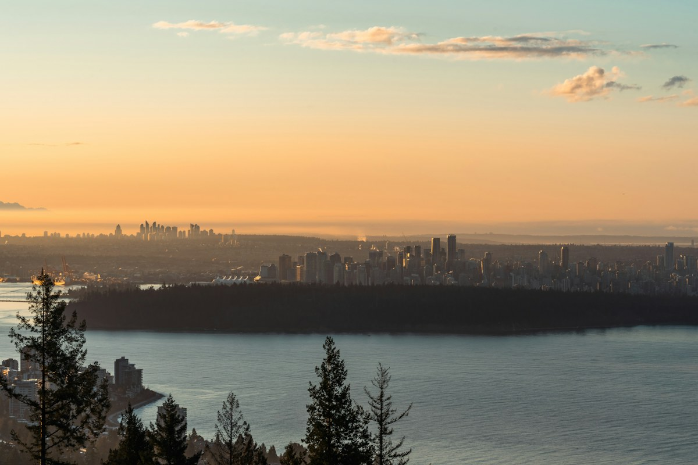

Where Morning
Finds You
Follow the day from the Pacific coast to central Canada. Each city has its own weather, first light, and forecast.
Checking forecast…

Vancouver, British ColumbiaPhoto by Matt Drenth
Canada, in a good light
Representative photos; badges show current forecasts.
Choose a city
Choose a city
Connecting…High / low—Wind—Snow today—Precipitation chance—
Today's daylight
Sunrise—Local timeSunset—
Forecasts are model estimates, not emergency alerts.